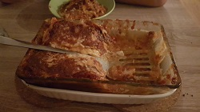

Lasagne
Backzeit: 45 min
Zubereitungszeit: 30 min
Ergibt: 4 Portionen

- 1 Zwiebel
- 2 Knoblauchzehen
- 1 EL Öl
- 500g gemischtes Hackfleisch
- Salz, Pfeffer, Zucker
- 2 EL Tomatenmark
- 500g stückige Tomaten aus der Dose
- 1 EL getrocknete Kräuter
- 100g Parmesan
- 2 EL Butter
- 2 EL Mehl
- 250ml Milch
- 1 TL Gemüsebrühe
- 9-12 Lasagneplatten
- 125g Mozzarella
- Für die Bolognese Zwiebeln und Knoblauch schälen und fein Würfeln.
- Öl in der Pfanne erhitzen, Hack, Zwiebeln und Knoblauch anbraten, mit Salz und Pfeffer würzen
- Tomatenmark einrühren und anschwitzen, stückige Tomaten, 125mlg Wasser und Kräuter dazu geben
- Aufkochen, 10 min köcheln, mit Salz, Pfeffer und Zucker abschmecken
- Für die Bechamelsoße Parmesan reiben, Butter schmelzen und das Mehl kurz anschwitzen
- Nach und nach die Milch und 250ml Wasser unterrühren und aufkochen
- Brühe unterrühren und 5 min köcheln, Parmesan (bis auf 2 EL) darin schmelzen und mit Salz und Pfeffer abschmecken
- Den Ofen auf 150°C Umluft vorheizen, die Lasagne schichten, mit Mozzarella belegen und mit dem restlichen Parmesan bestreuen.
- Im Ofen für ca. 45 min backen.